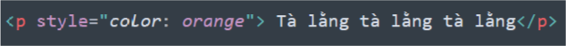
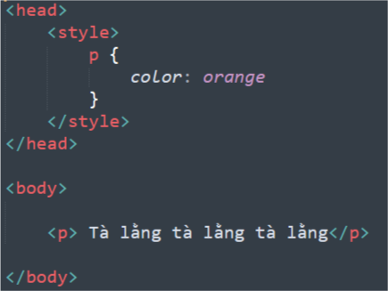
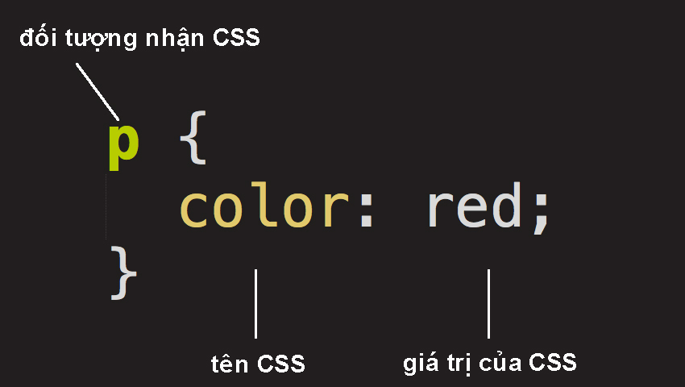
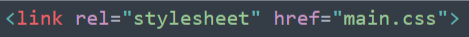
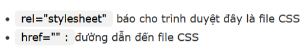

CSS - Cascading Style Sheet, dịch như nào là tùy bạn, mà cũng chả ai rảnh đi dịch đâu, vì mọi người thường gọi là Xê Ét Ét, nghe vừa tây vừa gọn.
Mục đích của CSS để trình bày bố cục, thay đổi các hiển thị của HTML, hay ta gọi đơn giản hơn là trang điểm cho trang web bằng cách dịch chuyển mắt mũi mồm miệng, thêm son phấn bla bla bla các thứ cho xinh đẹp.
Chúng ta của hiện tại có 3 cách dùng CSS chuẩn mực và hợp pháp nhất, còn các cách khác thì tôi không biết, có vẻ nó sẽ nhìn trông khá ngứa mắt nên là không nhét vào. Các cách đó bao gồm:
1) Thêm thuộc tính style = " " vào trong thẻ HTML
2) Thêm thẻ <style> </ style> vào trong thẻ <head> </head>
Như các bạn có thể thấy, CSS có cách viết khá là kì quặc khi ở trong thẻ <style> và có phần khó nhớ, nhưng cách việt đấy xét ra gần gũi với ngôn ngữ lập trình nhất.
3) Tạo file .css riêng bên ngoài và tạo liên kết từ file .html bằng thẻ <link>
Hình ảnh bên trên cho biết rằng file CSS có tên là main và phần đuôi mặc định của nó là .css để nhận diện.
Nếu phân tích ra thì ta có thể thấy một số thứ khó hiểu như sau:
color là anh bạn dùng để thay làn da cho màu chữ bằng cách gán cho nó một tên màu bằng tiếng Anh (ví dụ như pink, purple, orange,..) và có ông anh họ tên là background-color dùng để thay phông nền đằng sau, thỉnh thoảng ông này làm rơi mẹ nó chữ color, chỉ còn dòng background mà vẫn gán được phông màu đằng sau.